Peapod 用户手册 - 房客指南
版本： v0.19.2 最后更新： 2025年12月27日 平台： iOS（iPhone、iPad）
← 返回目录
目录
- 4.1 房客概览
- 4.2 浏览和搜索住宿
- 4.3 预订住宿
- 4.4 管理您的预订
- 4.5 与房东沟通
- 4.6 入住期间
- 4.7 评价与评分
- 4.8 忠诚度计划（奖励）
- 4.9 推荐系统
- 4.10 个人资料与设置
4. 房客指南
4.1 房客概览
作为房客，您可以：
- 🔍 搜索与浏览 - 按位置、日期、设施查找住宿
- 🧠 智能AI搜索 - 使用行程意图检测获取个性化结果
- 📅 预订住宿 - 安全支付预订房源
- 💬 与房东沟通 - 入住前/中提问
- ⭐ 发表评价 - 分享体验并附照片
- 🎁 赚取奖励 - 预订获得积分，推荐好友赚奖励
4.2 浏览和搜索住宿
4.2.1 探索视图（主屏幕）
顶部导航栏： 地图切换、已保存搜索（书签）、附近搜索（位置）、排序、收藏筛选（心形）、筛选（滑块）
智能搜索栏： 传统搜索、AI搜索、房源数量徽章
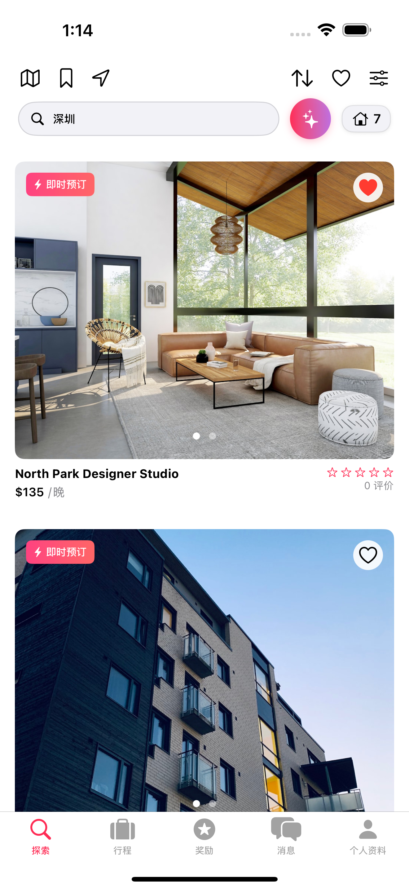
操作： 垂直滚动浏览 | 点击搜索栏输入 | 切换地图/列表 | 点击筛选打开面板
4.2.2 地图视图
交互式地图界面。位置： 探索视图 → 地图切换按钮
主要功能： 搜索圆圈可视化（5-50英里半径）、内联半径控制、搜索/AI搜索按钮、距离显示、地图样式切换（标准/卫星/混合）
地图控制： 搜索、AI搜索、排序、筛选、半径滑块、样式切换、放大/缩小（+/-）、拖动平移
房源卡片： 点击标记弹出卡片，显示照片、标题、价格、距离、评分。点击卡片查看详情，点击X或其他位置关闭。
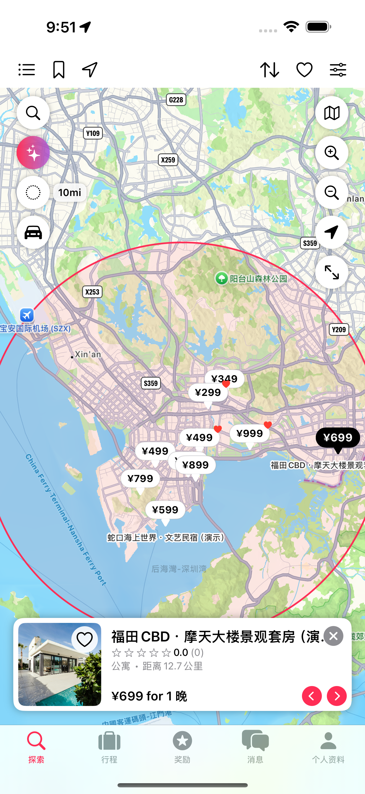
4.2.3 搜索房源
点击搜索栏输入：目的地、日期、房客数量，点击”搜索”执行。
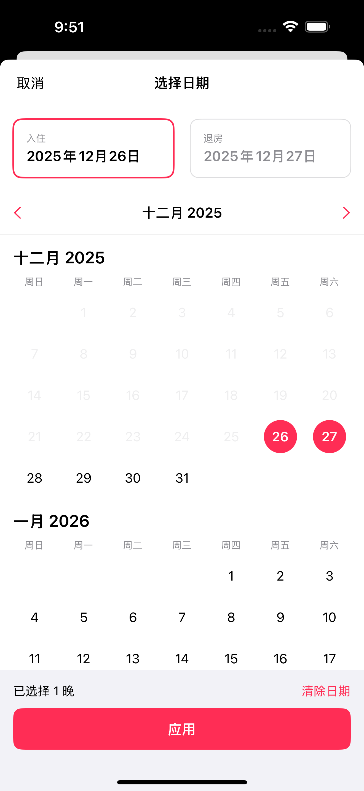 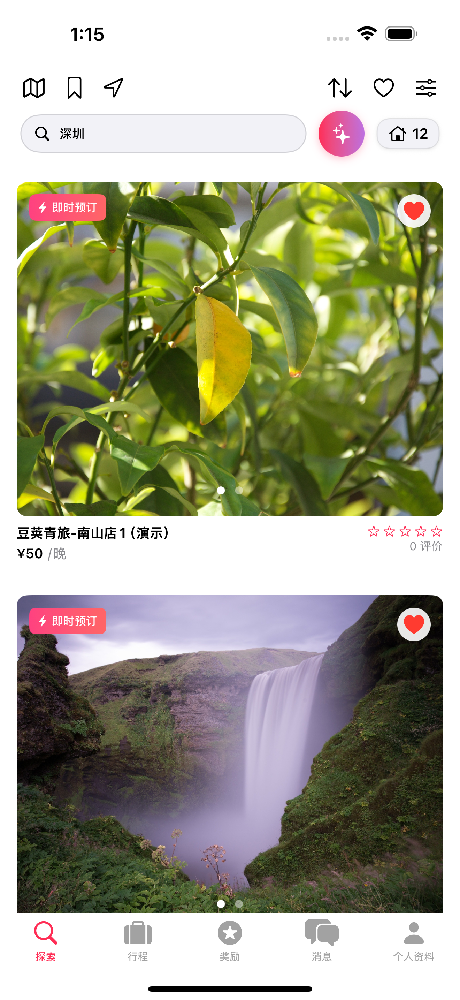
搜索结果： 房源卡片显示照片、标题、价格、评分。心形收藏，点击查看详情。
4.2.4 查看房源详情
点击房源卡片查看详情页：
A. 照片与概览： 滑动浏览照片、标题、位置、价格、房东信息、容量
B. 睡眠区域： 卧室配置、床型、可选房型（酒店/青旅）及价格
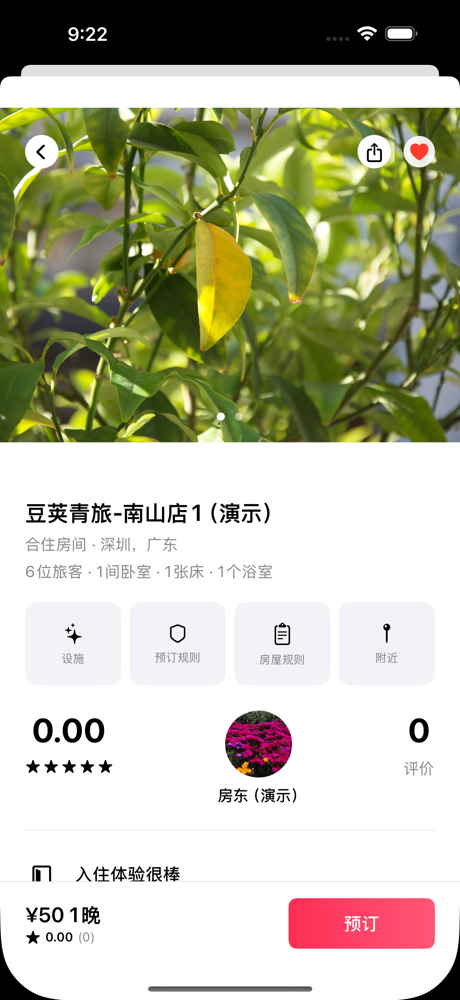 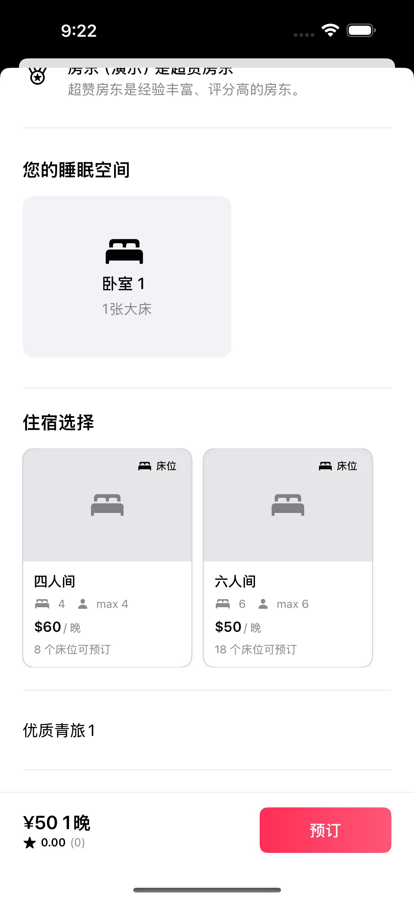
C. 位置与问答： 地图、公开问答、“提问”按钮
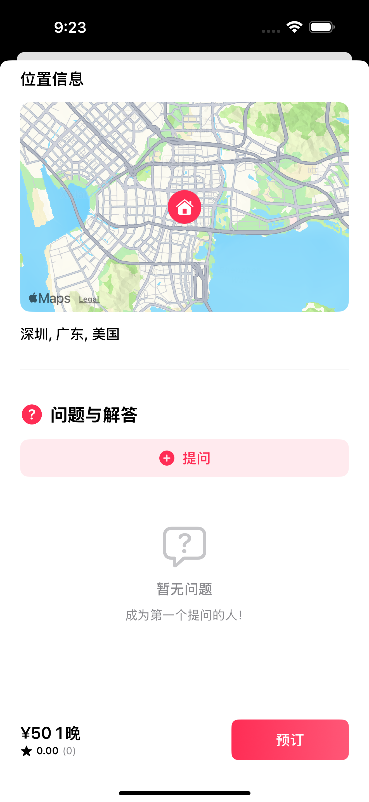
4.2.5 筛选和排序结果
点击筛选按钮打开8个筛选部分，实时更新结果数量。
筛选部分：
1. 价格： 范围滑块（¥0-¥1000+），快速选择预设
2. 房客评分： 最低评分筛选（任意、4.0+、4.5+、4.8+、5.0）
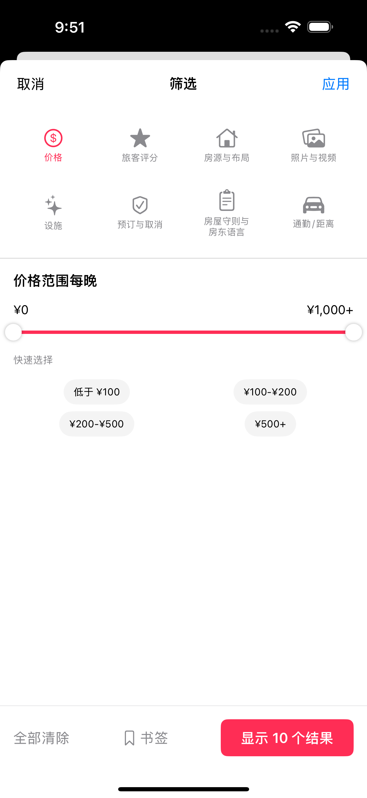 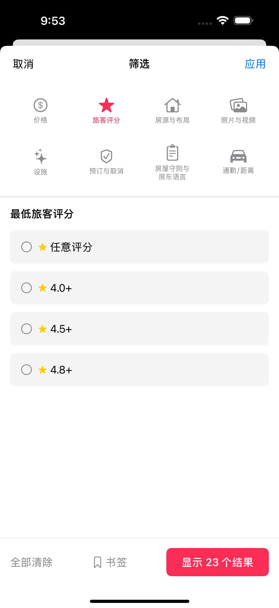
3. 房源类型和布局： 别墅/公寓/客房/酒店/青旅，卧室/浴室/床位最低数量
4. 照片和视频： 按媒体可用性筛选
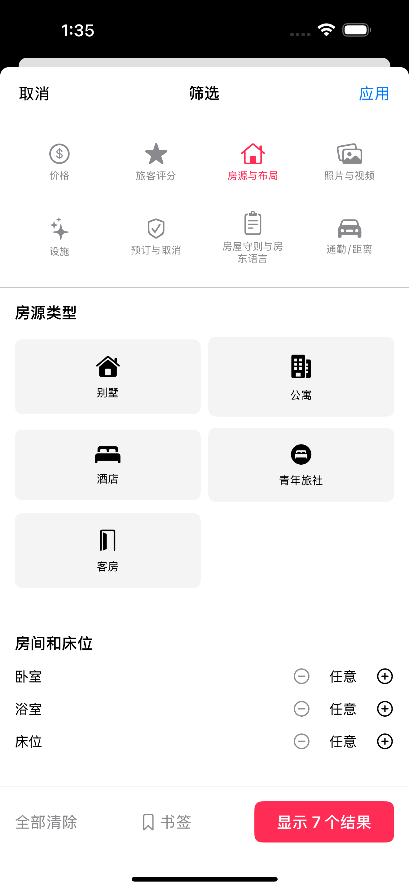 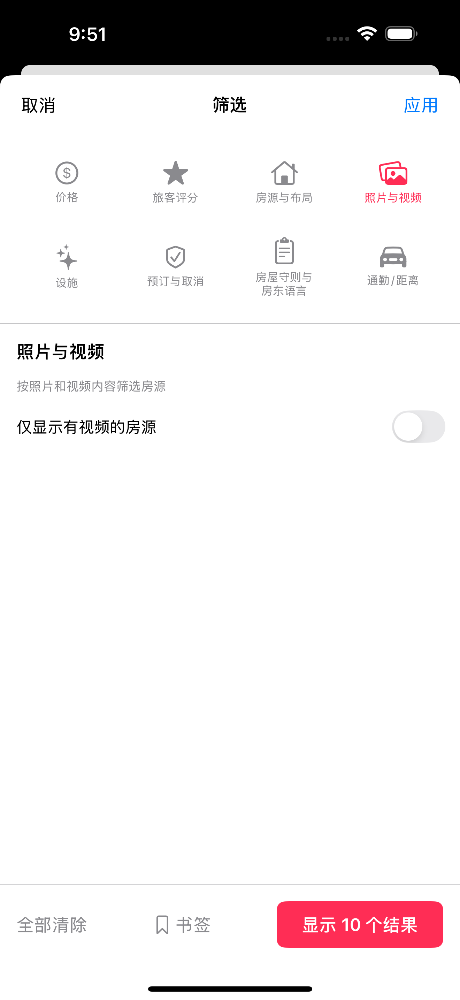
5. 设施： 必备（WiFi、厨房）、特色（泳池）、安全、无障碍。酒店/青旅匹配共享+房型设施组合。
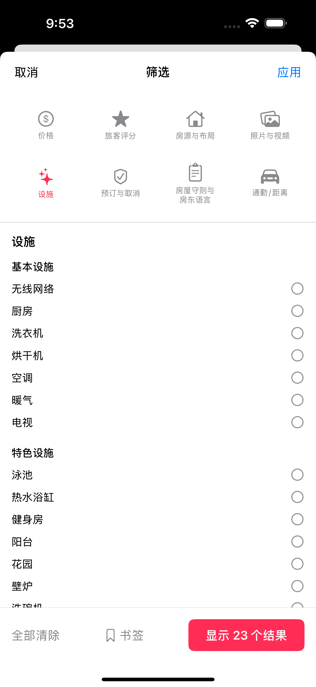 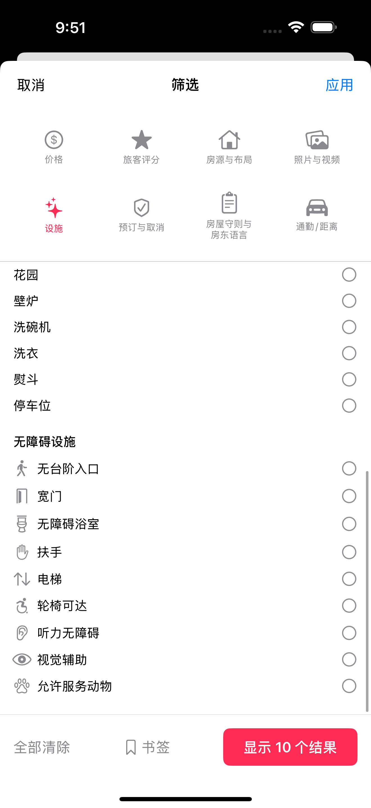
6. 预订和取消： 即时预订、自助入住、取消政策（灵活/中等/严格）
7. 房屋规则和房东语言： 三态筛选（宠物/吸烟/活动），房东语言多选
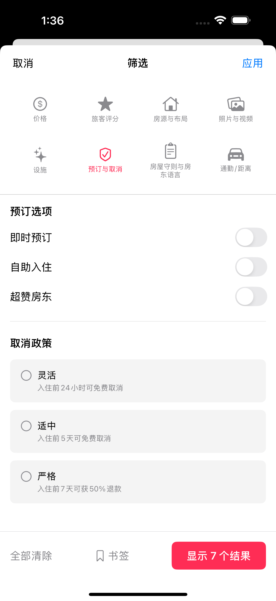 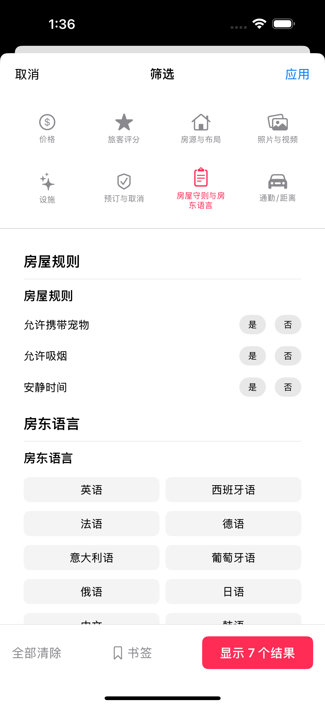
8. 通勤/距离： 输入目的地 → 验证 → 选择交通方式 → 设置最长时间（5-120分钟）
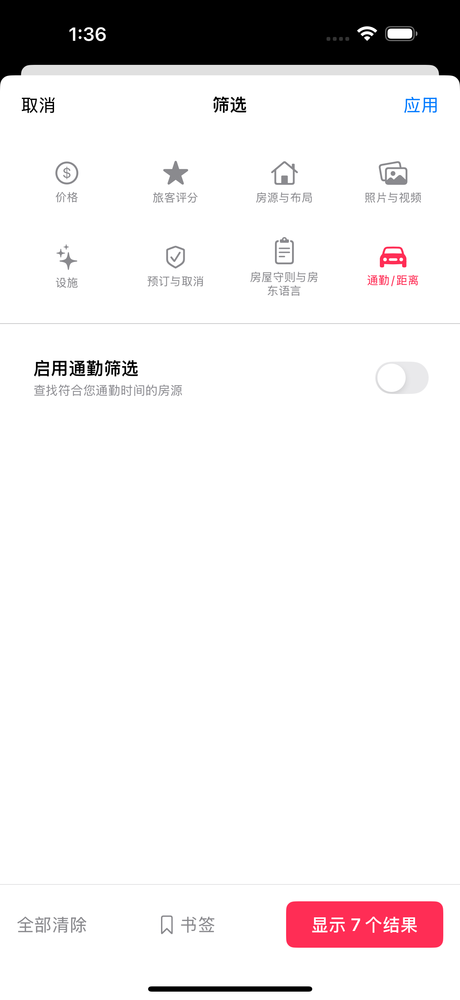 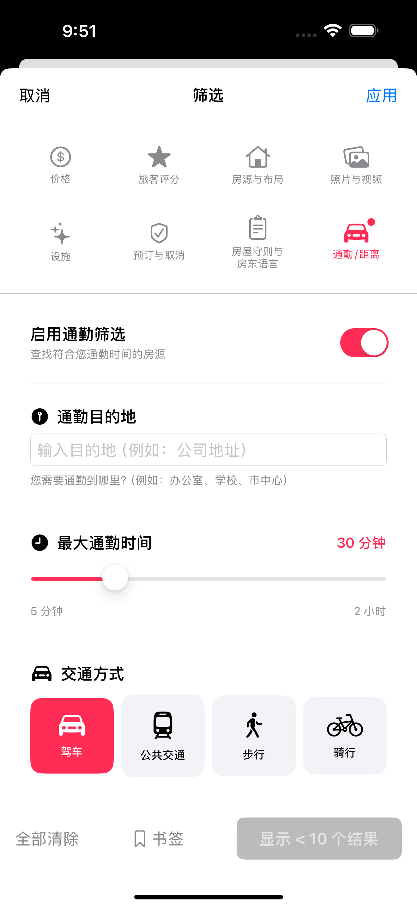
通勤筛选技巧：
- 按交通方式设置合理时间（20分钟驾车≠20分钟步行）
- 使用地标更容易输入（“深圳湾公园”比完整地址方便）
- 城市中公交往往比驾车更快
- 如果没有结果，增加最大时间
应用筛选： 点击”显示X个结果”应用，红色徽章显示活动筛选数量
4.2.6 AI搜索房源
用自然语言描述理想住宿，AI会自动解析并应用筛选。
使用方法： 1. 点击AI搜索按钮（闪光图标） 2. 描述您的需求（如”世界之窗附近安静的公寓，2人，下周末，500元以内”） 3. 查看解析结果，点击”搜索”或”修改”
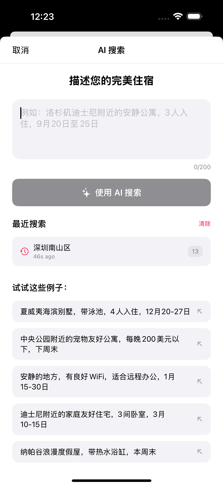 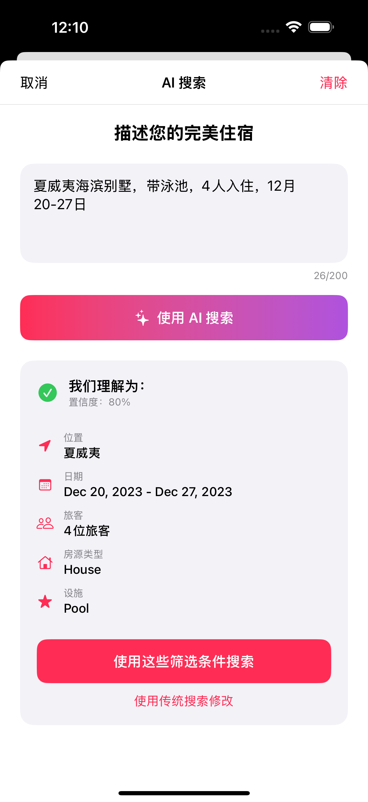
AI能理解： 位置、日期、人数、房源类型、设施、价格、行程意图（工作/家庭/浪漫等）
行程意图检测： AI自动识别行程类型并应用相关筛选
- 工作旅行 → 强WiFi、工作区、安静
- 家庭旅行 → 多卧室、厨房、停车
- 浪漫旅行 → 独立入口、安静、热水浴缸
4.2.8 酒店和青旅的搜索行为（多单元房源）
| 房源类型 | 搜索行为 |
|---|---|
| 独栋房屋、公寓、客房 | 筛选应用于整个房源 |
| 酒店、青旅、精品酒店 | 筛选应用于房型/床位级别 |
酒店/青旅筛选： 房客数量、价格、床位、设施均在房型级别匹配。卡片显示”从¥X/房间”或”从¥X/床位”（最便宜匹配项）。
提示： 🏨酒店按房间搜索 | 🛏️青旅按床位搜索 | 💰价格为每房间/床位每晚
排序选项（8种）： 推荐（默认）、最佳性价比、价格从低到高、价格从高到低、评分、距离最近、好评最多（5+评价）、最受欢迎
点击”排序”按钮选择，激活时变粉色。
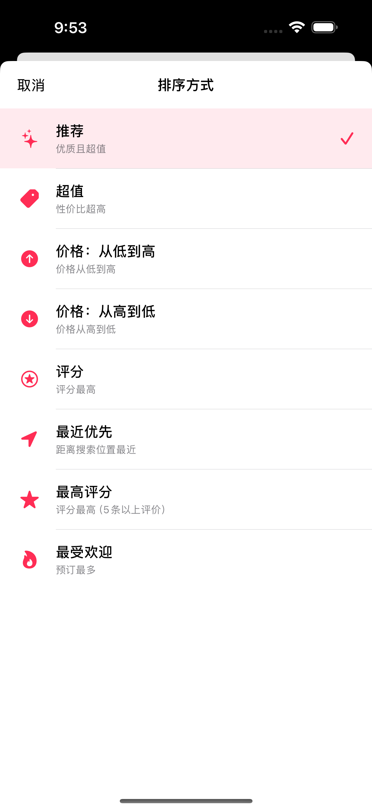
筛选书签： 保存常用筛选+排序组合，快速重用。位置/日期/房客不保存（每次选择）。
创建书签： 配置筛选 → 点击底部”书签”标签 → “将当前筛选保存为书签” → 输入名称保存。
使用书签： 打开筛选 → 点击”书签”标签 → 点击已保存书签的”应用”按钮。
编辑书签： 点击书签旁的”编辑”按钮，可修改书签名称和筛选条件，然后点击”更新书签”保存。
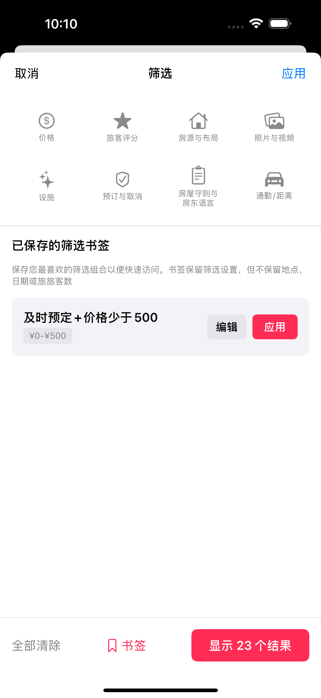 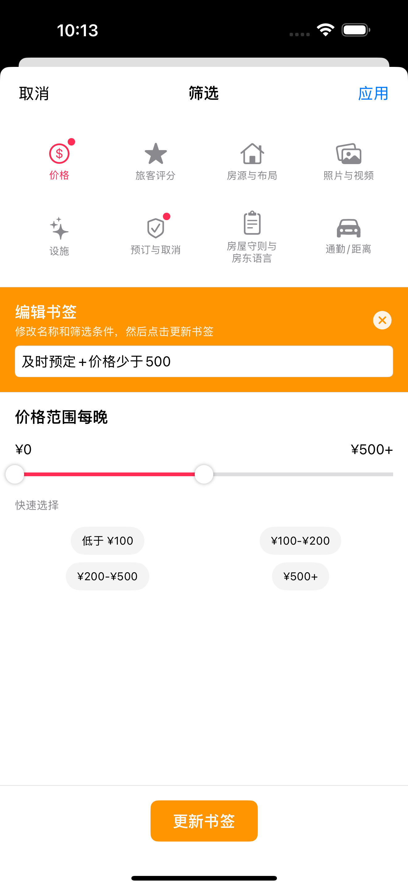
4.2.7 附近搜索
一键查找当前GPS位置附近的住宿（5英里半径）。
使用： 点击位置图标 → 授权GPS → 自动切换地图视图 → 按距离排序显示结果
隐私： 仅点击时访问位置，不存储追踪，预订前不与房东分享
4.3 预订住宿
4.3.1 标准预订流程
预订步骤： 1. 确认日期、房客数量、价格预览 2. 查看价格明细（基础价格 + 清洁费 + 服务费 + 税费） 3. 选择支付方式（Apple Pay推荐，或信用卡/借记卡） 4. 点击”确认并支付”完成预订
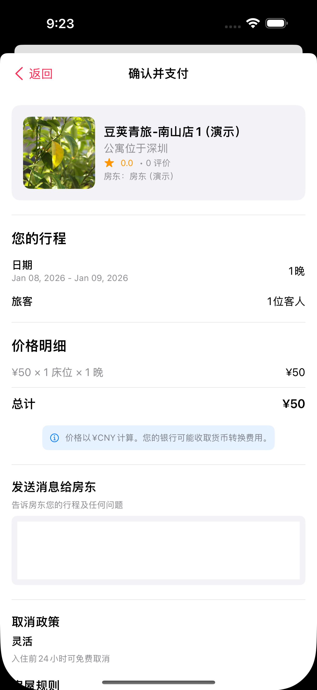 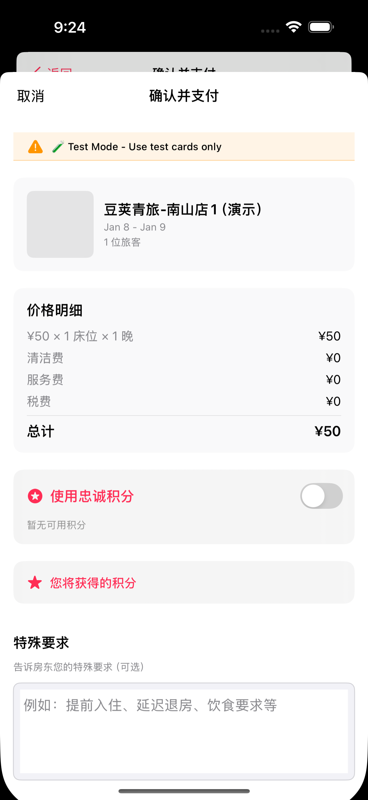
确认后收到： 应用内消息、预订参考编号、邮件确认、与房东的消息线程
4.3.2 即时预订 vs 申请预订
即时预订（⚡徽章）： 无需房东批准，支付即时处理，当场确认
申请预订： 发送请求 → 房东24小时内回复 → 批准后自动扣款，拒绝则不扣款
4.3.3 支付流程
- 授权冻结 - 预订确认时冻结全额
- 正式扣款 - 入住前24小时
- 房东收款 - 入住后24小时
押金： 部分房源需要，退房后3-5天退还（如无损坏）
4.3.4 预订酒店和青旅（房型/床位选择）
酒店、青旅支持多单元预订 - 选择房型/床型，可预订多个单元。
| 房源类型 | 选择单位 | 库存 |
|---|---|---|
| 酒店/精品酒店 | 房型 | 1+间房 |
| 青旅 | 床型 | 1+张床 |
预订流程： 1. 浏览房型卡片（名称、价格、床型、设施、可用性） 2. 点击选择房型 → 查看详情 3. 选择数量（团体可预订多间） 4. 标准支付流程完成预订

可用性指示器： ✅“5间可用” | ⚠️“仅剩2间” | ❌“已满”
说明： 价格为每房间/床位每晚，房客限制=单元数×每单元最大房客
4.4 管理您的预订
4.4.1 查看所有预订
位置： 主标签 → “行程”
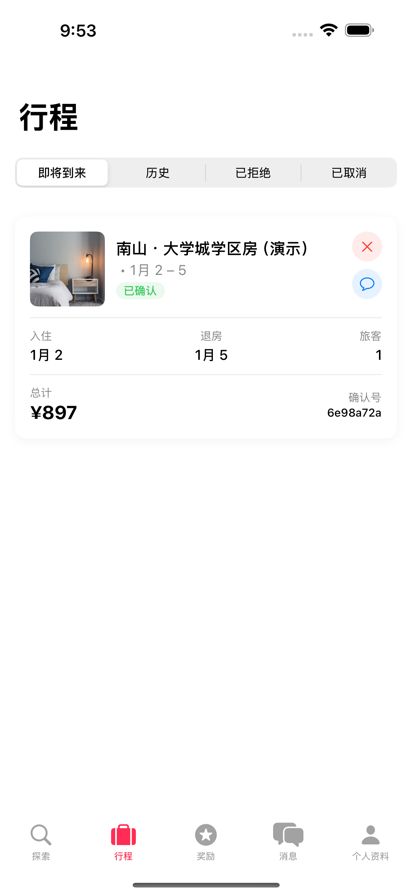 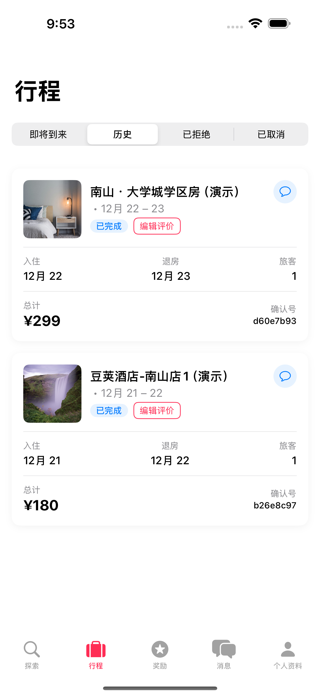
类别： 即将到来（未来）| 已完成（过去）| 已取消
卡片显示： 房源照片、名称、日期、状态。点击查看详情或联系房东。
4.4.2 查看预订详情
详情页： 房源信息、日期时间、状态、价格明细、房东联系
操作： 联系房东、取消预订、报告问题、发表评价（入住后）
4.4.3 取消预订
取消政策： | 政策 | 全额退款期限 | 部分退款 | 服务费 | |——|————-|———|——–| | 灵活 | >24小时 | 50%（<24小时）| 可退 | | 中等 | >5天 | 50%（2-5天）| 可退 | | 严格 | >14天 | 50%（7-14天）| 不可退 | | 不可退款 | 无 | 无 | 不可退 |
始终退款： 清洁费100%、税费100%（取消政策仅适用于基础价格）
取消方法： 行程 → 预订 → “取消预订” → 查看退款预览 → 确认。退款3-5个工作日到账。
特殊情况退款： 自然灾害、政府旅行限制、严重疾病（需文件证明）可申请全额退款，联系客服审核。
4.4.4 修改预订日期
自动批准： 灵活≥24小时、中等≥5天、严格≥7天。超出期限需房东批准（24小时内回复）。
流程： 行程 → 预订 → “修改日期” → 选择新日期 → 查看价格差异 → 确认
价格变化： 缩短→退款 | 延长→扣款 | 相同→无调整
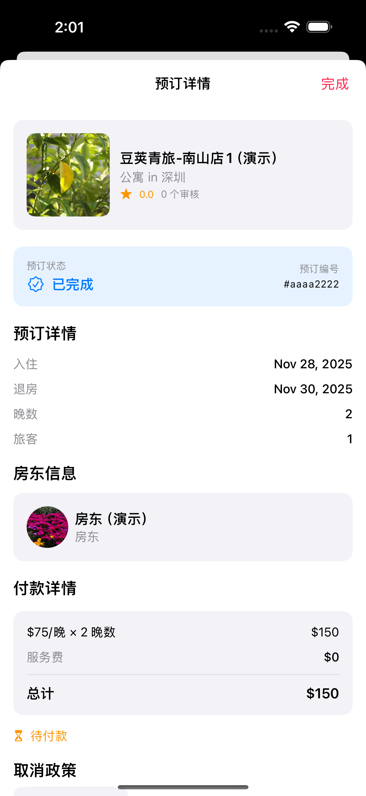 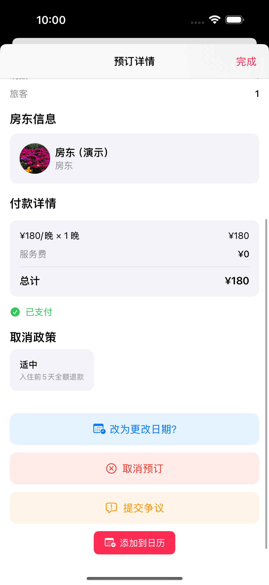
4.5 与房东沟通
位置： 主标签 → “消息”
4.5.1 消息收件箱
收件箱显示所有与房东的对话，红色徽章表示未读消息数量。
收件箱功能：
- 搜索： 顶部搜索栏快速查找对话
- 对话列表： 按最新消息排序，显示房源名称、最新消息预览、时间
- 未读标记： 红色圆点表示未读消息
4.5.2 对话详情
点击对话进入详情页，查看完整聊天记录。
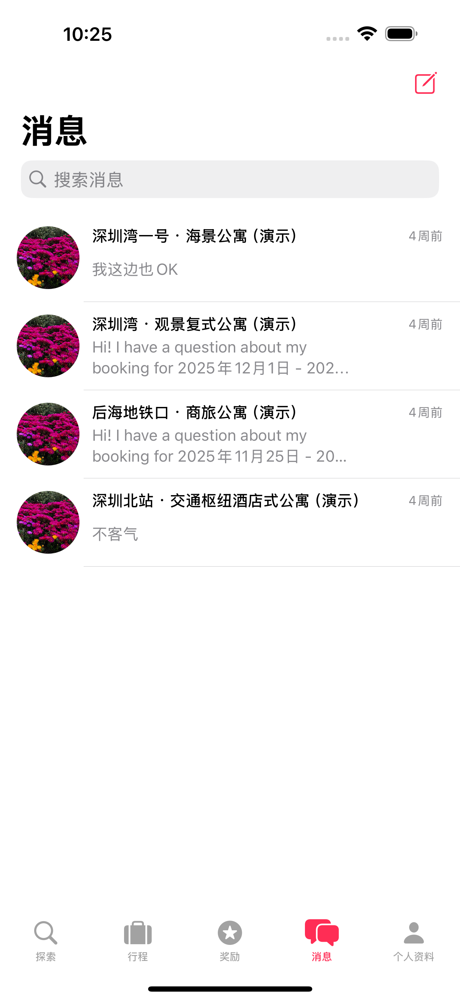 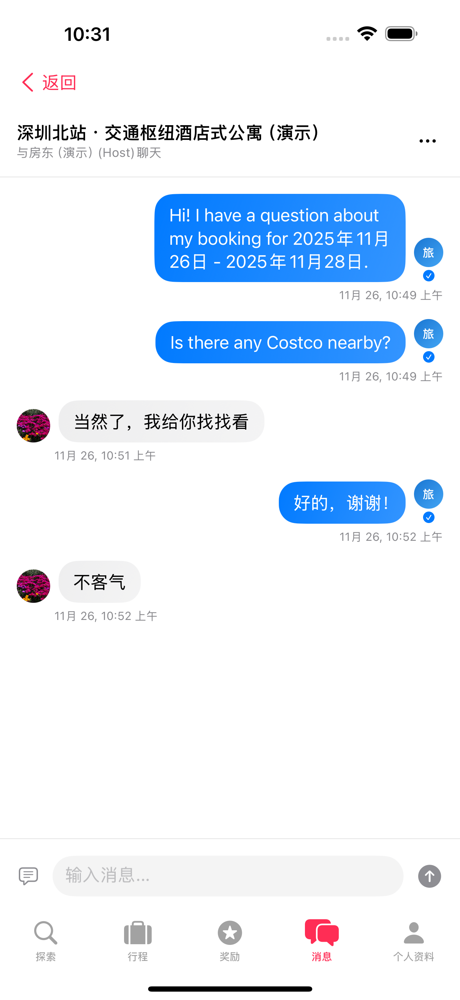
对话功能：
- 消息气泡： 蓝色为您发送，灰色为房东发送
- 时间戳： 显示消息发送时间
- 输入框： 底部输入框发送新消息
- 更多选项： 右上角”…“可查看预订详情
开始对话： 房源详情页点击”联系房东”，或预订后自动创建对话
消息功能： 实时发送、已读回执、输入指示器
常见问题：
- 预订前：入住/退房时间、停车、交通、宠物政策
- 入住前：入门说明、WiFi密码、设施使用
- 入住期间：报告问题、本地推荐
4.6 入住期间
4.6.1 入住
标准入住时间： 下午3:00（因房源而异）。查看预订详情中的入住说明，点击”获取路线”导航。
无法进入？ 联系房东 → 15分钟无回复则致电 → 仍无法进入则”报告问题”
4.6.2 入住期间
房屋规则： 遵守房屋规则、保持清洁、报告损坏、尊重邻居
需要帮助？ 首先联系房东 → Peapod客服 → 紧急情况拨打911
维护问题： 联系房东（用照片记录）→ 2小时未解决则”报告问题” → 可能获得部分退款
4.6.3 退房
标准退房时间： 上午11:00（因房源而异）
退房清单： 收集物品、处理垃圾、清洗餐具、关灯关电器、锁门、归还钥匙
4.7 评价与评分
评价窗口： 退房后立即开放，14天后关闭。双方都评价后（或14天后）发布。
访问： 行程 → 已完成 → 选择预订 → “发表评价”
评价内容：
- 评分（1-5星）： 总体、清洁度、准确性、沟通、位置、性价比
- 评价文字： 最多500字符（可选）
- 照片： 最多5张（可选）
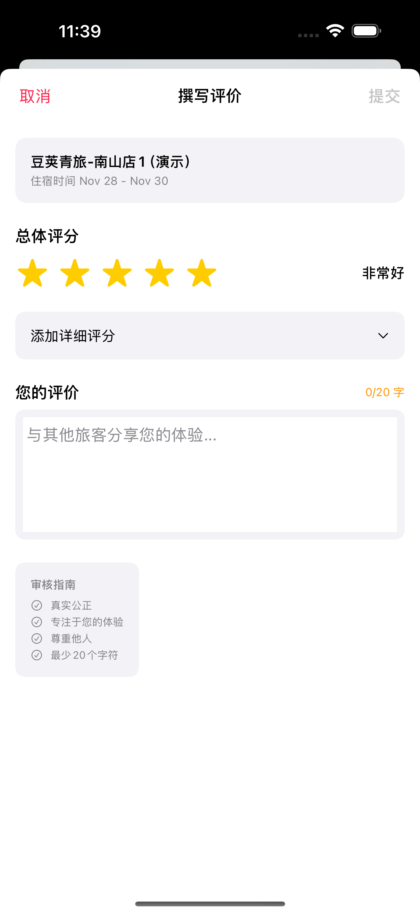
评价指南： 诚实建设性，专注具体体验。避免人身攻击或分享联系信息。
提交后： 私密直到双方都评价，发布后无法编辑，房东可回复
4.8 忠诚度计划（奖励）
位置： 主标签 → “奖励”
 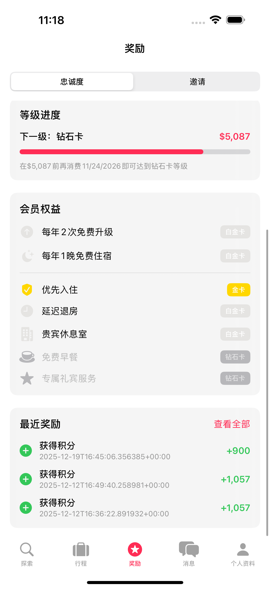
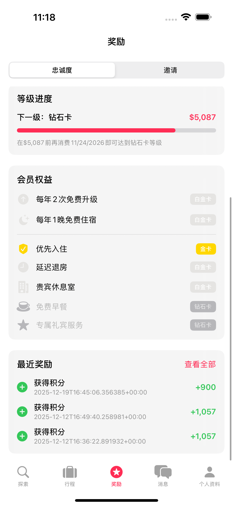
赚取积分： 完成预订（1%）、发表评价（+50积分）、推荐好友
积分价值： 1积分 = ¥0.01，永不过期
等级（基于年度消费）： | 等级 | 消费门槛 | 积分率 | |——|———|——–| | 银牌 | ¥0+ | 2% | | 金牌 | ¥2,500+ | 3% | | 铂金 | ¥5,000+ | 4% | | 钻石 | ¥10,000+ | 5% |
兑换： 结账时”使用积分”，最低100积分，最多可抵扣20%。取消预订积分退还。
4.9 推荐系统
位置： 奖励标签 → 推荐
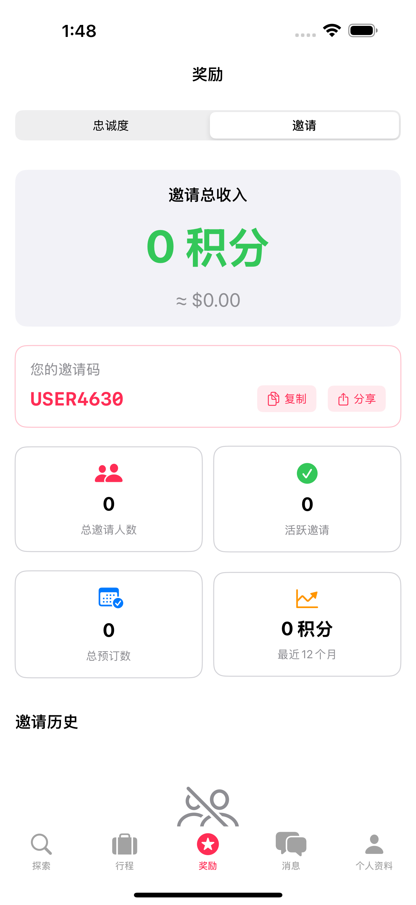
工作方式： 分享推荐码 → 好友注册并预订 → 您赚取预订金额的2%（12个月内）
分享： 点击”复制”或”分享”，通过微信、短信、邮件发送邀请链接
规则： 仅房客可推荐，代码需注册时输入，预订完成后发放积分
中国版1.0： 积分仅能兑换预订折扣，不支持提现
4.10 个人资料与设置
通用功能参见 通用功能：个人资料、消息、通知、账户设置、隐私、帮助
房客特定功能：
个人资料统计： 行程数、评价数、会员年数
身份验证： 手机短信验证（中国版1.0主要方式）→ 获得”手机已验证”徽章，提高预订批准率
查看其他用户： 点击房东/评价者姓名查看公开资料（姓名、类型、评价、简介）